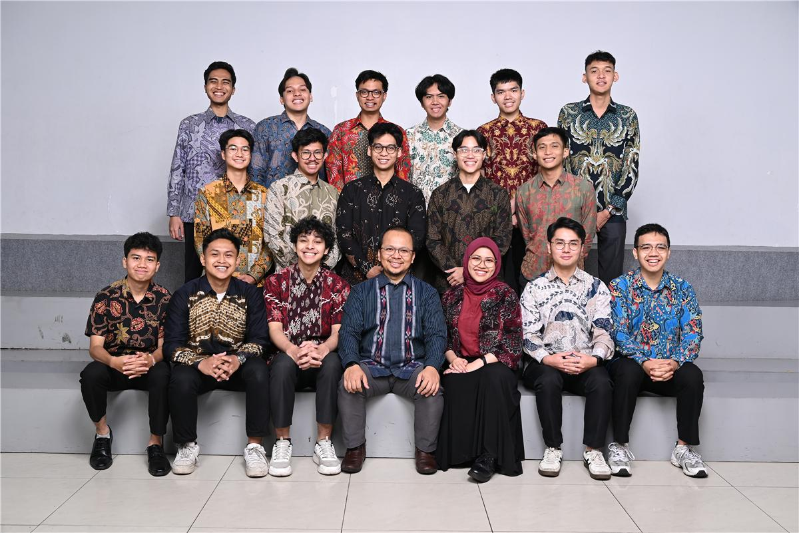

PeopleAnggotaメンバー
Doctoral, master's and undergraduate researchers working on one decarbonization pathway.Peneliti doktor, magister, dan sarjana yang bekerja dalam satu jalur dekarbonisasi.一つの脱炭素化経路に取り組む博士・修士・学部の研究者。
Current membersAnggota saat ini現メンバー
The research teamTim riset研究チーム
Filter by degree level or theme.Saring berdasarkan jenjang atau tema.課程やテーマで絞り込めます。
AlumniAlumni修了生
Where our graduates goKe mana lulusan kami melangkah修了生の進路
Graduate study in Japan, the Middle East and Europe, or careers in power generation, engineering, consulting and technology.Studi lanjut di Jepang, Timur Tengah, dan Eropa, atau berkarier di pembangkitan listrik, rekayasa, konsultan, dan teknologi.日本・中東・欧州の大学院、または発電、エンジニアリング、コンサルティング、テクノロジー分野へ。
